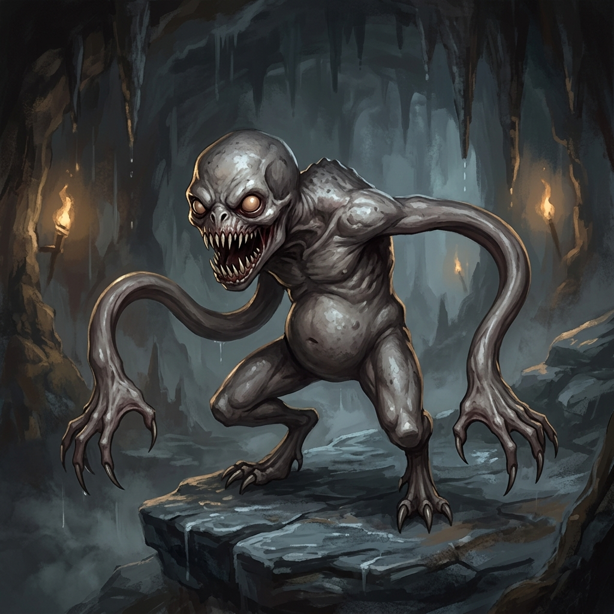
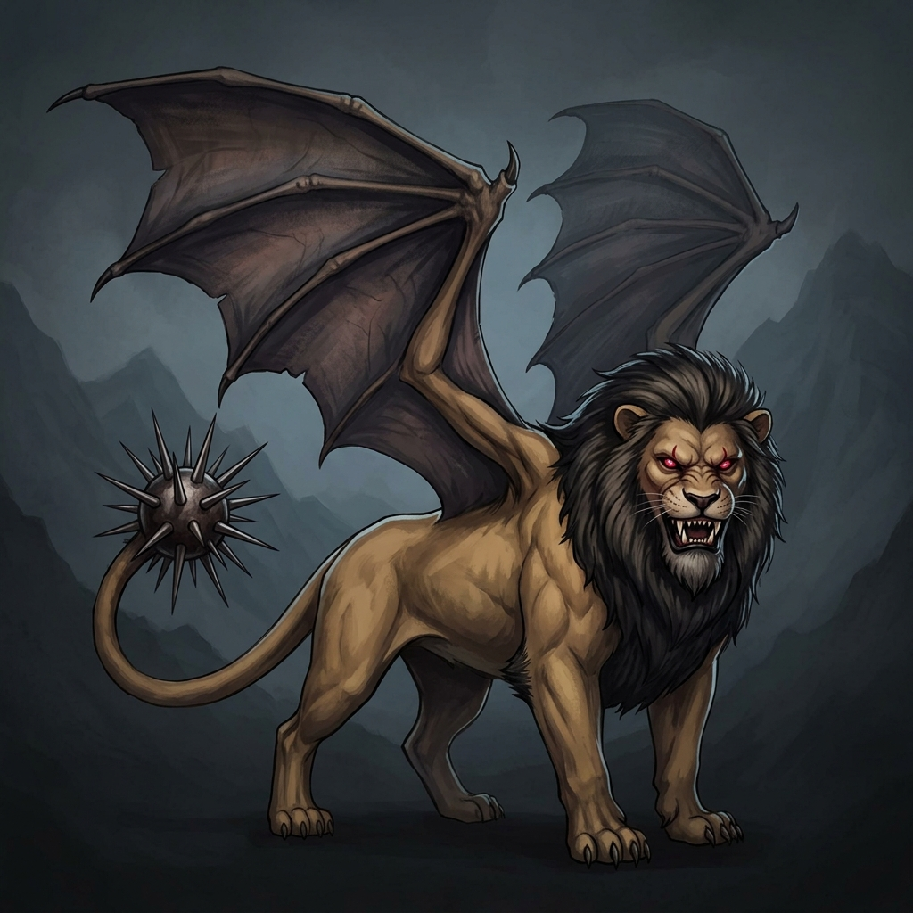

Samanburður á eldri og nýjum myndum
Hér má bera saman eldri myndirnar sem höfðu minniháttar frávik (Flokkur B) og nýgerðar myndir sem voru hannaðar til að fylgja nákvæmlega líffærafræði Pathfinder 1e (Archives of Nethys).
1. Choker (CR 2 • Aberration)
Pathfinder: „long, pliable arms like tentacles capped with five wide, spiny claws“
Eldri mynd (Flokkur B)
Frávik

- Líffærafræðilegt frávik: Hentar tveimur mannlaga framhandleggjum með klóm, plús tveimur aukafálmum úr baki með kolkrabbasogskálum.
- Í Pathfinder 1e eru engar kolkrabbasogskálar né fjórir sjálfstæðir útlimir á efri búk.
- Stíll og lýsing eru góð, en líffærafræðin er óþarflega „kolkrabbakennd“.
Ný mynd (Flokkur A) ★
Samþykkt
- 100% nákvæm Pathfinder-líffærafræði: Nákvæmlega tveir langir, liðalausir og sveigjanlegir armar eins og gúmmífálmar sem enda á fimm hvössum klóm.
- Engar sogskálar: Náttúruleg hrjúf og slétt leðjuraufuð holdhúð neðanjarðarveru.
- Hokin stelling, skelfileg nálar-tennt kjaftglufa og glóandi gulbrún augu á klettanös í dimmum helli.
- Handmáluð 2D málverksáferð í fullu samræmi við Darkgrid-stíl.
Niðurstaða um Choker
Nýja myndin er mun betri og réttari. Hún losnar við misvísandi kolkrabbasogskálar og fangar nákvæmlega hinn klassíska Pathfinder 1e Choker með tvo teygjanlega kyrkingararma.
2. Manticore (CR 5 • Magical Beast)
Pathfinder: „vaguely humanoid head, body of a lion, wings of a dragon, spiked tail“
Eldri mynd (Flokkur B)
Frávik

- Líffærafræðilegt frávik: Er með stór sveigð hrútshorn (ram horns) sem ekki tilheyra Manticore í Pathfinder.
- Andlitið er nær eingöngu hefðbundið dýrslegt ljónsandlit í stað hins óhugnanlega hálf-mannlega andlits.
- Líkaminn, vængirnir og broddahalinn eru mjög flottir, en heildin minnir frekar á Chimera.
Ný mynd (Flokkur A) ★
Samþykkt
- Engin hrútshorn: Höfuðið er laust við framandi hrútshorn og fylgir réttri Pathfinder-líffærafræði.
- Óhugnanlegt mannslegt andlit: Andlitsfallið ber greinileg mannlaga einkenni (nef, augnumgjarðir, grimmt glott) umlukið dökku ljónsmakkaskeggi og rauðglóandi augum.
- Öflugur ljónsbúkur, stórir leðurvængir og þung broddakúla á halaenda sem skýtur járngöddum.
- Dökkur klettatindur í fjallaþoku, engin ramma- eða pappírsáhrif, fullkominn Darkgrid-stíll.
Niðurstaða um Manticore
Nýja myndin fangar sérkenni Manticore mun dýpra. Hið mannslega andlit fær veruna til að virka mun óhugnanlegri og gáfaðri en venjulegt dýr, sem passar fullkomlega við lore-ið í Pathfinder 1e.